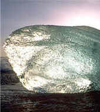

Measurement (Introduction)
Measurement is finding a number that shows the size or amount of something.
We can measure:

Length
Length is how far from end to end. Also called Distance.
The length of this guitar is about 1 meter (slightly more than 1 yard).

Area
Area is the size of a surface: how much is inside the boundary of a flat (2-dimensional) object such as a triangle or circle.
Here Ariel the Dog is waiting patiently inside 1 square meter.

Volume
Volume is the amount of 3-dimensional space an object occupies. Also called Capacity.
This jug has exactly 1 liter of water in it (slightly more than 2 pints)

Mass (Weight)
Mass is how much matter something contains.
This bar of Gold has a Mass of 1 kilogram (slightly more than 2 pounds)
(Weight is "Heaviness" ... the downward force caused by gravity on an object.)

Temperature
How hot or cold a thing is.
Temperature is measured using a thermometer, usually in the Celsius or Fahrenheit scale.
This block of ice would measure 0° Celsius, or 32° Fahrenheit
Time
Time is the ongoing sequence of events taking place.
We measure time using seconds, minutes, hours, days, weeks, months and years.
There are lots of other things we can measure, but those are the most common.
Systems of Measurement
There are two main "Systems of Measurement":
Metric System (meters, kilograms, liters, etc.)
US Standard Units (feet, pounds, pints, etc.)
History of Measurement
Years ago people came up with standard length measures, but they didn't all agree on one system.
The Imperial System (which uses yards, feet, inches, etc to measure length) was developed over hundreds of years in the UK
Then the French came up with the Metric System (origins in 1670, but developed in the 1790s), which soon spread through Europe, and then most of the world, even to England itself in 1965.
The USA developed their own version of the Imperial system (US Standard Units), but the Metric System is also used in the USA, particularly in Science.